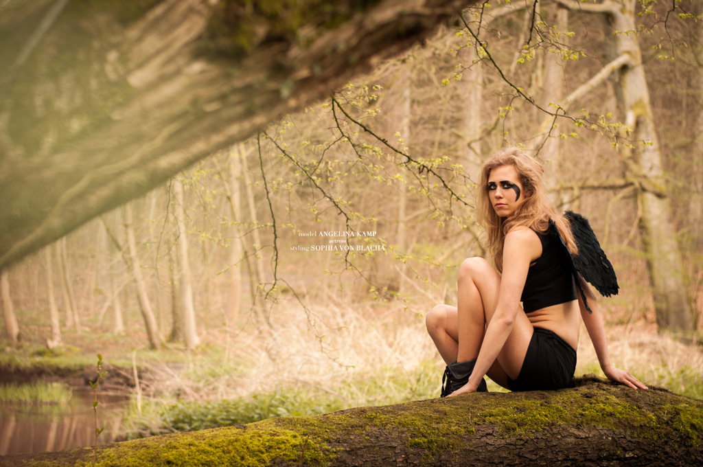

- 
Homeshooting mit
Andrea
Das außergewöhnliche Shooting entstand mit der Schauspielerin Angelina Kamp. Ich hatte einst eine Idee für melancholische Fotos mit dunklerer Stimmung im Wald und schwarzen Accessoires gehabt. Angelina war von dieser Idee begeistert und zauberte mit mir meisterhafte Werke.